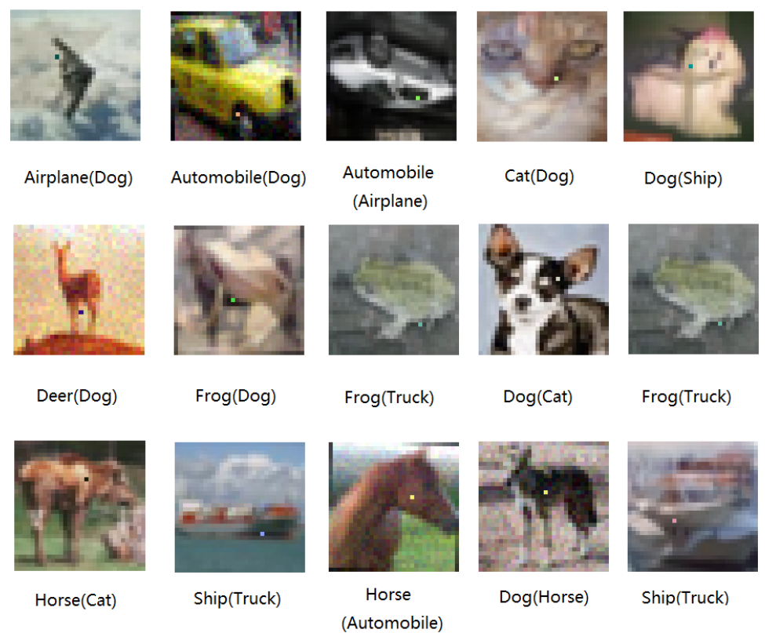
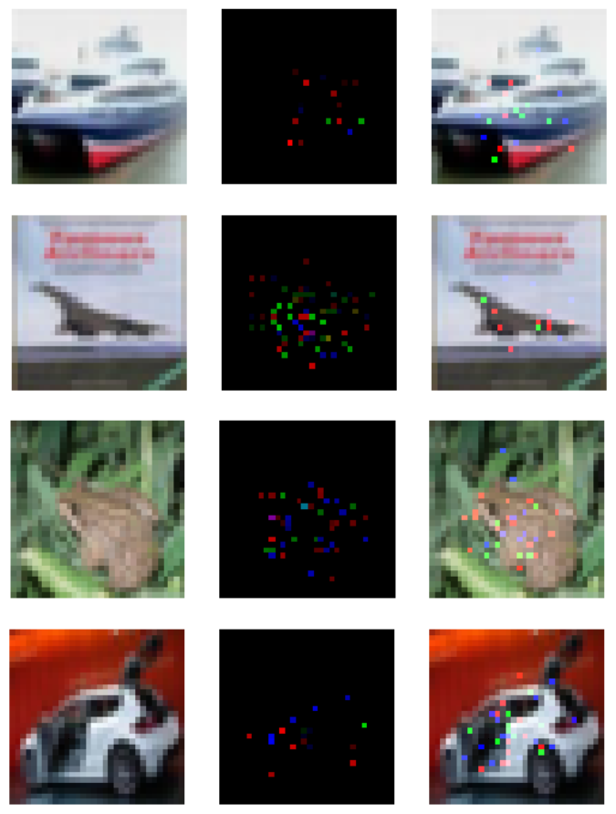
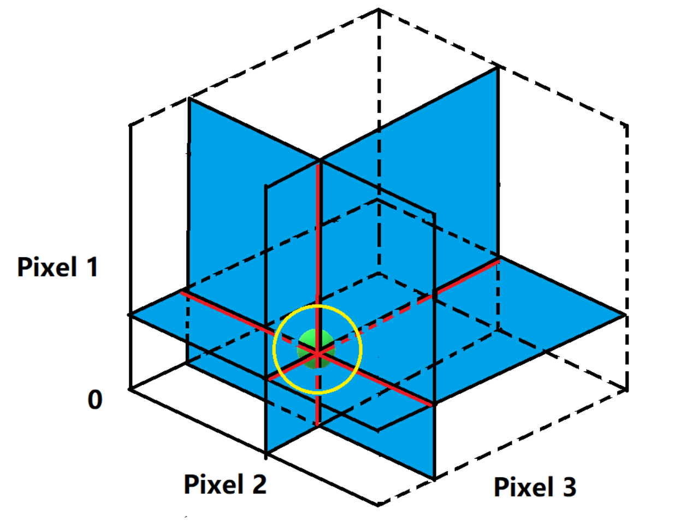
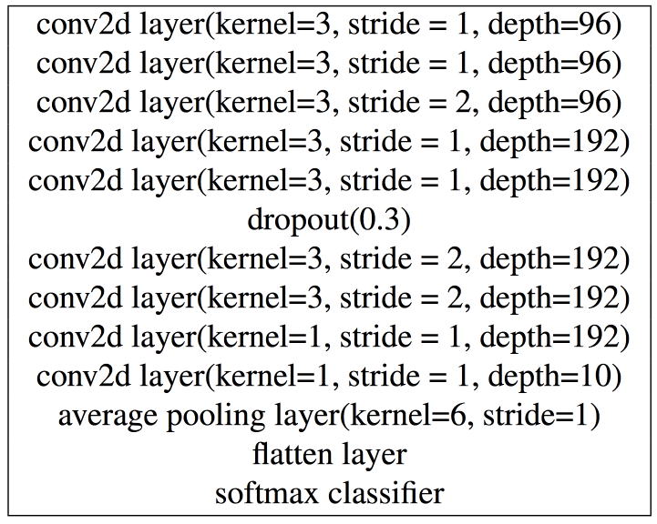
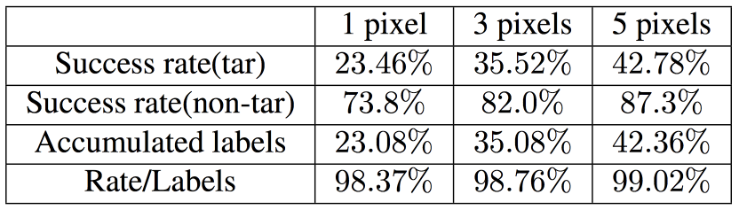
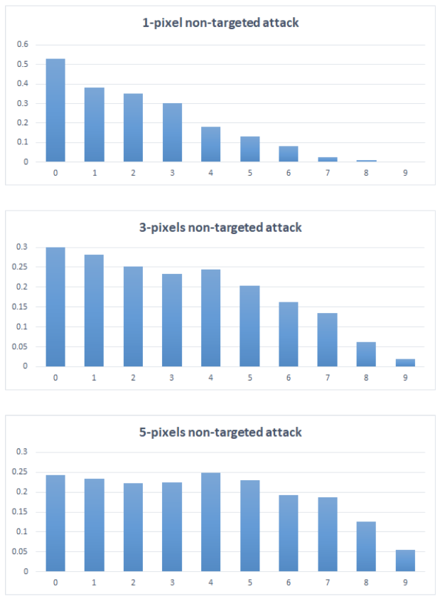

One pixel attack for fooling deep neural networks
Posted by Xuchao Zhang, Virginia Tech
Recent research has revealed the Deep neural networks (DNN) is very sensitive to tiny pertubation on the input vectors. Several methods are proposed to craft effective pertubation against the networks. In this blog, we will introduce a novel method [1] for optically calculating extremely small adversarial pertubation (few-pixels attack) based on differential evolution. The method requires much less adversrial information and works with a broader classes of Deep neural network models. Specifically, the work shows that 73.8% of the test images can be crafted to adversarial images with modification just on one pixel with 98.7% confidence. The following figure shows the adversarial images generated by the algorithm that successfully fooled the target DNN with one pixel modification. The modified pixel is highlighted in the figure.

Contrary to the above one-pixel modification, the following adversarial images are generated by using the work [1] of Papernot et al. The pertubation is conducted on about 4% of the total pixels and can be easily recongnized by human eyes.

The adversarial images generation problem can be formalized as an optimization problem with correpsonding constraints. The input image can be interpreted by a vector which each scalar element represents one pixel. Let $f$ be the target image classifier that receives n-dimensional inputs, then $\textbf{x} = (x_1, \dots x_n)$ be the original natural image correctly classified as class $t$ and vector $\textbf{e(x)} = (e_1, \dots e_n)$ is an additive perturbation according to $x$. The classifier $f$ is a mapping that separates the input space into classification regions. The goal of adversaries in the case of target attack is to find the optimized $e(x)$ for the following problem.
$$ minimize_{\textbf{e(x)}} \|\textbf{e(x)}\| \\ s.t.\ \ f(\textbf{x} + \textbf{e(x)}) \ne f(\textbf{x})$$
To obtain the perturbation vector $\textbf{e(x)}$, one needs to decide the following three aspects: 1) how many dimensions and 2) which dimensions that need to perturb and 3) the corresponding strength of modification. Many kinds of perturbations proposed only modify a part of total dimensions such that a considerable number of elements of $\textbf{e(x)}$ are left to zeros. In the case of one-pixel attack, the numbers of dimensions that need to perturb are set to be constant numbers 1, 3 and 5, and the constraints on the strength of perturbation are not set on each dimension either. Therefore, the proposed method is utilized for solving the variable of which dimensions to perturb.
Geometrically, the entire input space of a DNN is a highdimensional cube. The 1-pixel modification proposed can be seen as perturbing the data-point towards the parallel direction to the axis of one of the $n$ dimensions. Similarly, the 3 or 5-pixel modification moves the data-points within 3 or 5-dimensional cubes. Overall, such perturbations with regard to few pixels are conducted on the low-dimensional slices of input space. Intuitively, it seems that 1-pixel perturbation is merely a small change in the vast high dimensional input space such that it might hardly be able to find the effective perturbations. In fact, 1-pixel perturbation allows to modify a image towards a chosen direction out of n possible directions that parallel to the axis of input space coordinate, with arbitrary strength. Therefore, the complete set of all adversarial images that can be created from an image, forms a n-dimensional coordinate inside the input space which the origin is the image itself and each axis has the same length to the input space coordinate. In other words the search of adversarial images starts from the original image and go across the input space through the directions which each of them is perpendicular to any others. This is illustrated by the following figure in the case when n = 3. The figure illustrates the case of using 1 and 2-pixel perturbation attack in a 3-dimensional input space(i.e. the image has three pixels.) The green point denotes a natural image to perturb. In the case of 1-pixel perturbation, the search space is on the three lines intersected at the natural image and each of three lines is perpendicular to any others, denoted by red and black stripes. In the case of 2-pixel, the search space is on three 2-dimensional planes intersected and each of three planes is perpendicular to any others, denoted by blue. To sum it up, 1 and 2-pixel attack search the perturbation on 1 and 2 dimensional slices of the original 3-d input space. In addition, the yellow circle indicates the search areas of previous works which utilized $L_p$ norm to control the overall modification space. Comparatively, our few-pixel attack can search much further areas.

Therefore, even if only modifying one pixel, it allows to search the candidate adversarial images in a fairly wide scope. Compared with previous works using $L_p$ norm to control the overall perturbation strength, which the resulting search spaces are a small sphere around the vicinity of the image, the search of few-pixel attack can go much further in the input space therefore more hopeful of reaching other targeted classes.
To find which dimensions to perturb, the work utilizes Differential evolution (DE) algorithm. Differential evolution which belongs to the general class of genetic algorithm (GA), is a solution for solving optimized problems by keeping improving the quality of a candidate population according to a given fitness function [3]. Even if DE does not guarantee a globally optimal solution is ever found, it has mechanisms in the population selection phase that keep the diversity such that in practice it is expected to work better on finding higher quality solutions than gradient-based solutions, or even other kinds of GAs. In specific, during each iteration another group of new population (children) is generated according to the population generated from last iteration (fathers). Then the children are compared with their corresponding fathers, survive if they are better than their fathers. In such a way of only comparing the father and his child, the goal of keeping diversity and improving fitness values can be simultaneously achieved.
DE does not use the gradient information for optimizing therefore does not require for the optimization problem to be differentiable such that it can be utilized on a wider range of optimization problems compared to gradient based methods such as those are not continuous, time-related, noisy and so on. Using DE for generating adversarial images can generally have the following advantages: 1) Higher probability of finding global optima; 2) Require less information from target system; and 3) Simplicity.
The information of perturbation is encoded into DNAs as input to be evolved by differential evolution. One DNA contains a fixed number of perturbation and each perturbation is a tuple holding 5 elements: x-y coordinates and RGB value of the perturbation. One perturbation modifies one pixel. The initial number of DNAs (population) is 400 and at each iteration another 400 children will be produced by using the following formula:
$$x_i(g+1) = x_{r_1}(g) + F(x_{r_2}(g)) + x_{r_3}(g) \\ s.t. \ \ \ r_1 \ne r_2 \ne r_3$$
The $x_i$ is an element of a child, $r_1$, $r_2$, $r_3$ are random numbers, $F$ is the scale parameter set to be 0.5, $g$ is the current index of generation. Once generated, the children compete with their corresponding fathers according to the index of the population and the winners survive until next iteration. The maximum number of iteration is set to be 75 and an early-stop criteria will be triggered when the probability label of target class exceeded 99%. The initial population is initialized by using uniform distributions U(1, 32) for generating x-y coordinate (i.e. the image is with a size of 32X32) and Gaussian distributions N(128, 75) for RGB values. Since we aim to launch the targeted attack, the fitness function is simply the probabilistic label of the target class.
To evaluate the one-pixel model, the authors trained a target DNN image recognizer by using cifar10 dataset, with the parameter setting listed in the following table.

The success rates and adversarial probability labels for 1, 3 and 5-pixel perturbations are shown by the following table. The success rate shows that the perturbation can cause a considerable amount of successful crafting of adversarial images. In specific, on average each natural image can be perturbed to at least 2, 3 and 4 target classes by 1, 3 and 5 pixel modification. By dividing the adversarial probability labels by the success rates, it can be aware that for each successful perturbation, our algorithm averagely provides 98.7% probability label to the target classes.

The number of target classes is shown by the following figure. The figure count the number of images that successfully perturbed to a certain number (from 0 to 9) of target classes by using 1, 3 and 5-pixel perturbation respectively, divided by number of images for normalization, shown by the vertical axis. The horizontal axis indicates the number of target classes.

To sum up, a differential evolution based method is introduced in this blog for generating adversarial images. Experimental results show that method is effective on generating adversarial images in very limited conditions. For example, in an ideal case it can be done with just one-pixel perturbation out of 1024 pixels in total.
[1] Su, Jiawei, Danilo Vasconcellos Vargas, and Sakurai Kouichi. "One pixel attack for fooling deep neural networks." arXiv preprint arXiv:1710.08864 (2017).
[2] Papernot, N., McDaniel, P., Jha, S., Fredrikson, M., Celik, Z.B. and Swami, A., 2016, March. The limitations of deep learning in adversarial settings. In Security and Privacy, 2016 IEEE European Symposium on (pp. 372-387).
[3] Storn, R. and Price, K., 1997. Differential evolutiona simple and efficient heuristic for global optimization over continuous spaces. Journal of global optimization, 11(4), pp.341-359.
CS/ECE 5584: Network Security, Fall 2017, Ning Zhang